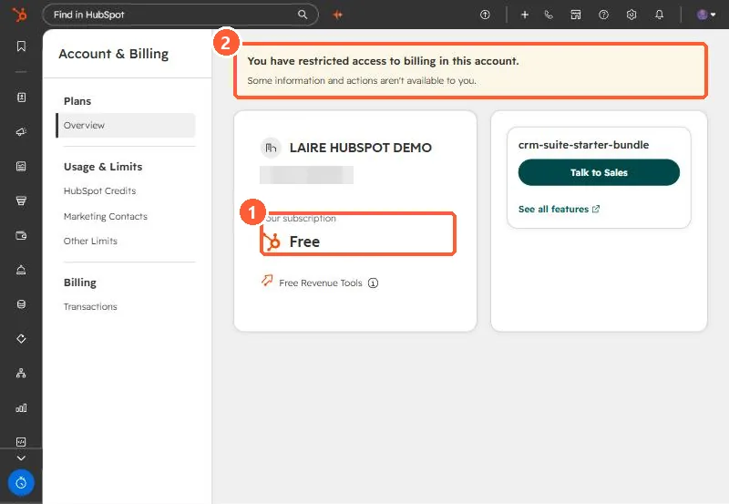

Short answer
Your subscription lives on the Account & Billing page. When I tried to answer this for our agency's portal through the API, there was no subscription endpoint, and feature probes only showed that sequences, workflows, forecasts and so on worked, not which product paid for them. Trials blur it further: our demo portal runs Enterprise trials and its billing page says Free. Ask someone with billing access if the page shows a restricted access banner.
1. The API does not answer it
Our agency's portal needed a straight answer on which hubs and tiers we pay for. I checked through the API first. There is no subscription endpoint. HubSpot's partner client object carries hub editions for client portals, but our own portal is not one of them. Feature checks showed sequences, workflows, forecasts, goals, projects and campaigns working. None of that says which product pays for them, so the answer had to come from the billing page.
2. The billing page, and what can mislead
Our demo portal has Enterprise trials active, and its Account & Billing overview shows the subscription as Free. Trials turn features on without being something you pay for. The page also shows a banner when your user has restricted access to billing, in which case some information is hidden from you.


3. Getting a reliable answer
- Ask a user with full billing access to read the Overview, or to share the latest invoice.
- Write down each hub and edition, plus seats, and add the date. It changes at renewal.
- Treat anything on trial as temporary, and note when the trial ends.
Knowing the tier matters for almost every article here, because features like workflows and custom events depend on it.